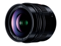

无忌
器材库
全部器材
产品年表
名词百科
榜单
器材库
> APS画幅镜头 > LEICA DG SUMMILUX 12/1.4 ASPH.

松下
LEICA DG SUMMILUX 12/1.4 ASPH.
分类
APS画幅镜头
点评
0 条
图片
0 张
评测
0 篇
一支35mm画幅等效焦距为24mm的大光圈广角镜头，采用15片12组（含2片非球面镜、1片ED和2片UED镜片）镜头结构，9片圆形光圈，滤镜口径为62mm。具备防尘防滴性能。
产品类型
APS画幅镜头
综合评分
暂无评分
无忌评测
暂无评测
规格参数
网友点评
(0)
产品图 / 样片
(0)
评测文章
(0)
详细规格
镜头类型
广角镜头
发布日期
2016-06-15
厂家推荐价格
180,000.00 （日元）
焦距
12mm
等效35mm画幅焦距
24mm
最大光圈
f/1.4
最小光圈
f/16
视角（对角）
84°
镜头结构
15片/12组
非球面镜片
2片
低/超低色散镜片
1片ED、2片UED片
光圈叶片
9片
最近对焦距离
20cm
最大放大倍率
0.1倍（35mm等效：0.2倍）
滤镜口径
62mm
镜头卡口
Micro 4/3
防抖
否
颜色
黑色
尺寸
70×70mm
重量
335g
附件
遮光罩，镜头盖，镜头后盖，镜头袋
备注
防尘防滴
该产品暂无存档的网友点评
该产品暂无存档的产品图
评测 / 相关文章
该产品暂无存档的评测文章
相关文章
［资讯］Imaging Resource公布年度镜头获奖结果
（存档）
［资讯］松下DG 12/1.4 ASPH镜头网购免运费
（原站已下线）
［试用］与松下徕卡12/1.4的第一次亲密接触
（原站已下线）
［行情］松下徕卡12mm F1.4预订价格出炉
（原站已下线）
［资讯］松下发布12mm f/1.4 Summilux ASPH镜头
（原站已下线）
［资讯］松下推出12/1.4 大光圈广角定焦镜头
（原站已下线）